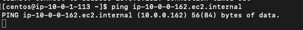
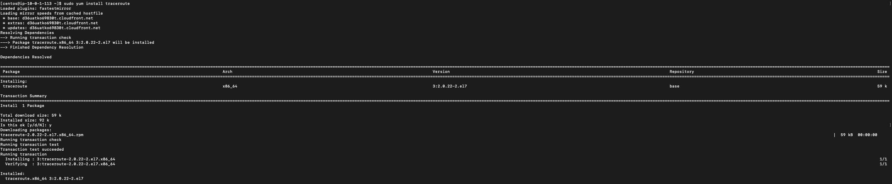
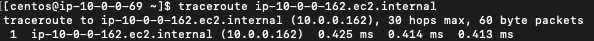
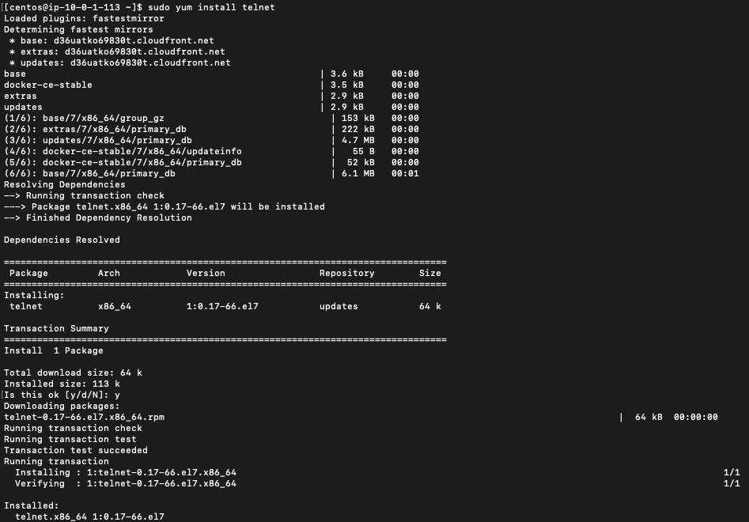
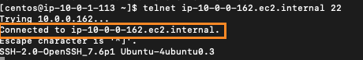
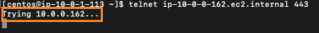

Troubleshooting Performance and Connectivity using Ping, Traceroute, or Telnet
This guide covers the second half of verifying connectivity for applications via Netskope Private Access (NPA). It covers verifying connectivity from the Netskope Publisher to the Private Applications and should be considered after using the Netskope Troubleshooter in the UI and in conjunction with verifying Client to Publisher connectivity. The tools used are all common tools found in most operating systems, and some are natively included in the Publisher. Installation instructions are provided for the tools not natively included on the Publisher. Netskope does not endorse or support the installation, configuration, or troubleshooting of the below tools. They are provided as examples and you may choose to use other tools that perform similar functions..
Ping (ICMP)
Ping is a common and simple way to verify connectivity. Although ping is not supported across NPA, it is supported on the Publisher. However, not all networks allow the ICMP protocol and ping does not validate port and protocol specific connectivity. For Private Access purposes, it can be used to validate that the Publisher can reach the application as long as ICMP is not blocked.
SSH to the publisher using either a terminal app or an SSH application such as Putty.
Drop out of the main Publisher menu by using the Exit option (depends on the platform, but 5 in this case).

Ping the device by entering
ping ip-10-0-0-162.ec2.internalwhereip-10-0-0-162.ec2.internalis the hostname of the application. If successful, you should see a response that includes response times.
If you can’t reach the application, you will see no or a limited number of responses (in case of packet loss).
 Upon terminating the ping you will see summary info on packet loss.

Traceroute
Traceroute validates the path and connectivity between two hosts. It is not installed on the Publisher by default, and has similar limitations to ICMP as ICMP is used by traceroute to determine connectivity at each hop in the path.
SSH into the Publisher using either a terminal app or an SSH application such as Putty.
Drop out of the main Publisher menu by using the Exit option (5 in the case of an AWS Publisher).
Enter
sudo yum install tracerouteto install traceroute and confirm the install by enteringy. Test the path and connectivity by entering
traceroute ip-10-0-0-162.ec2.internalwhereip-10-0-0-162.ec2.internalis the hostname you are troubleshooting.
In the above example, the Publisher is on the same subnet as the application, so only one hop directly to the application host is observed. In more complex larger environments, you will likely observe multiple entries as the traffic may traverse more network devices between the Publisher and the application.
Telnet
Telnet is not installed on the Publisher by default. Follow the instructions below to install telnet.
SSH to the publisher using either a terminal app or an SSH application such as Putty.
Drop out of the main Publisher menu by using the Exit option (5 in the case of an AWS Publisher).
Enter
sudo yum install telnetto install telnet and confirm the install by enteringy. Once telnet is installed, you can now test connectivity on specific ports to a specific private application. For example, enter
telnet ip-10-0-0-162.ec2.internal 22to test connectivity to hostnameip-10-0-0-162.ec2.internalon port22. A successful connection will reflect a connected state. An unsuccessful connection will remain unconnected.
